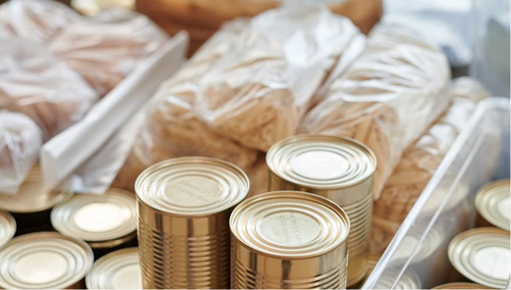
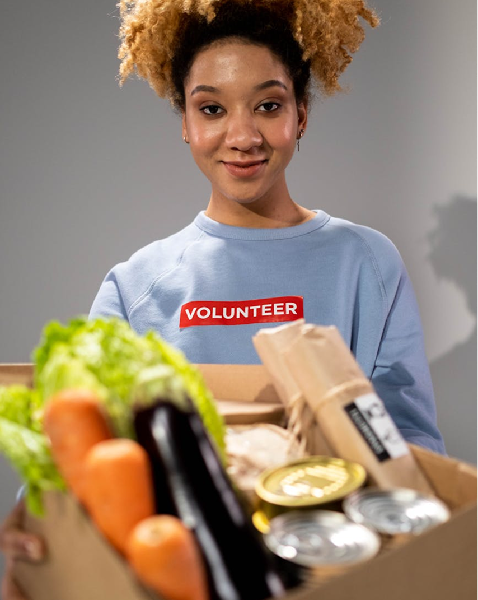
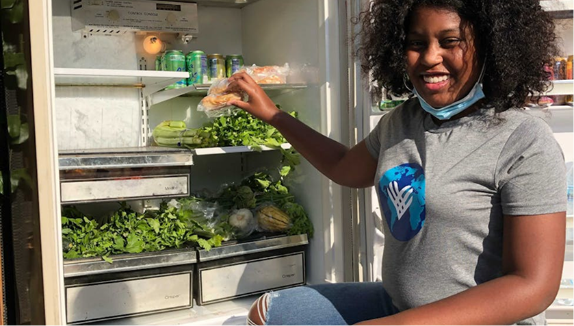

Campus Lunch Day: Makerere University Recap
Read more
On a bright Thursday morning at Makerere University, the usual rush between lecture blocks felt a little different. Instead of students splitting early to hunt for affordable food off campus, hundreds gathered at a central distribution point for Campus Lunch Day — a Learn N' Lunch initiative designed around one idea: no student should have to choose between eating and attending class.
Volunteers arrived before the first lecture block ended. Tables were set, signage went up, and a short briefing reminded everyone that dignity matters as much as logistics. Students were not "beneficiaries" in a line — they were peers receiving practical support so they could return to class focused and ready.
Distribution ran across the peak lunch window, timed to match the breaks between major faculty lecture blocks. The team tracked three priorities throughout the day:

By mid-afternoon, the team had served well over 400 meals. Several students stopped to share quick feedback on index cards — many mentioned that a reliable lunch removed a daily source of stress they had normalized.
"I usually skip lunch during exam season. Today I ate, went to my afternoon lab, and actually understood the lecture."
— Second-year student, College of Natural Sciences
Campus Lunch Day is never a solo effort. Student guild representatives helped spread the word through faculty WhatsApp groups. Faculty advisors pointed students toward the distribution point between sessions. Local food partners ensured portions were filling, balanced, and served at a consistent quality.
We are especially grateful to the student volunteers who gave up their own lunch break to serve others — a reminder that this movement is led from within campus communities.
Every Campus Lunch Day teaches us something new. At Makerere, three lessons stood out:
The next Campus Lunch Day build will incorporate student feedback on queue layout and faculty-specific break times. We are also exploring a simple SMS/WhatsApp reminder sent 15 minutes before distribution opens.
If you are a student leader or campus partner interested in bringing Campus Lunch Day to your faculty, visit our Get Involved page or email info@learnandlunch.org.
Related reading: Campus Lunch Day recap (extended notes)
PEOPLE
ALSO READ

 Donate Now
Donate Now